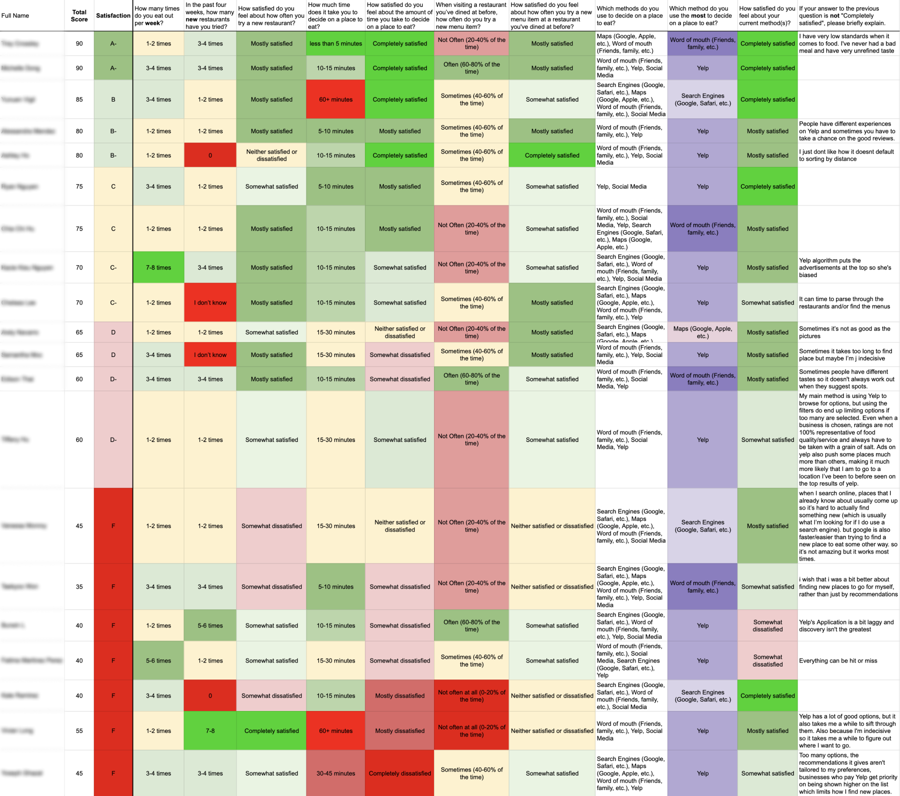

primary research
Surveying diners and recruiting for user interviews
Expanding on my secondary research, I crafted a screener survey to identify diners dissatisfied with some aspect of their dining experience. I planned on using their responses to tailor interview questions for each interviewee.
My target diners
- Diners aged 16-55
- Use mobile apps regularly (3+ times a week)
- Dine out or order takeout at least once a week
- Feel at least somewhat dissatisfied about one or more aspects of their dining experience
- Use mobile apps to make dining out decisions at least once a week
Hypothesis
I hypothesized that that diners are dissatisfied with their discovery, method(s), and decision-making process.

A few questions I asked:
- In the past 4 weeks, how many new restaurants have you tried?
- How much time does it take you to decide on place to eat?
- How often do you try something new at a restaurant?
- What methods do you use to decide on a place to eat?
satisfaction scale
For each question, I asked respondents how satisfied they feel:

Completely satisfied

Mostly satisfied

Somewhat satisfied

Neither

Somewhat dissatisfied

Mostly dissatisfied

Completely dissatisfied
How satisfied do diners feel?
After collecting 20 survey responses, I organized the data in a spreadsheet to identify the most dissatisfied diners (shown in the 'Survey data and methods' tab). Through cross-data analysis, I compared responses to uncover similarities, differences, and patterns, helping me identify potential correlations between aspects of the dining experience and levels of dissatisfaction.
Data visualization
Overall, respondents feel least satisfied about how long they take to make dining decisions—an average of 50% rating.
Among the least satisfied respondents, this rating drops to an average of 26%.
Complete Survey Data
The table below was used to calculate the satisfaction levels and findings in the first tab.
5 methodology
First, I measured individual user satisfaction levels on the following: average time spent on finding a place to eat, frequency of trying new restaurants, frequency of trying new dishes, and current methods to make dining decisions. Then I assigned a scoring system, where I assigned points to each satisfaction level, with "Completely satisfied" being 5 points and both "Completely dissatisfied" & "Mostly dissatisfied" being 0 points. Due to having only one data point for "Completely dissatisfied," I combined its score with "Mostly dissatisfied" to simplify calculations and keep the ratings as whole numbers without decimals for a clearer analysis.
.png)


.png)